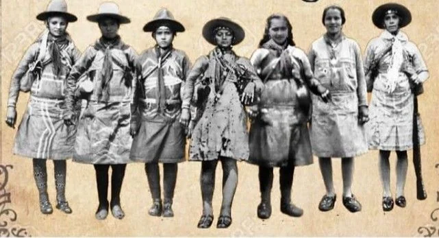

As mulheres do cangaço desempenharam papéis diversos e muitas vezes
fundamentais dentro dos grupos cangaceiros no nordeste brasileiro. Embora o
cangaço seja frequentemente associado a homens, as mulheres também desempenharam
funções importantes, tanto nas atividades cotidianas quanto nas estratégias de
combate. Aqui estão alguns dos papéis que as mulheres do cangaço desempenharam:

Protetoras e cuidadoras
Dentro dos acampamentos cangaceiros, as mulheres muitas vezes desempenhavam
papéis de cuidadoras, preparando alimentos, cuidando dos feridos e ajudando
nas tarefas domésticas.
Inteligência e estratégia
Algumas mulheres do cangaço eram hábeis em reunir informações sobre os
movimentos das autoridades e dos inimigos, desempenhando papéis de inteligência
e estratégia.
Representantes políticas e mediadoras:
Em alguns casos, as mulheres do cangaço serviam como representantes
políticas dos grupos, negociando com fazendeiros, políticos e autoridades locais.
Elas também podiam mediar disputas internas dentro do grupo.
Símbolos de resistência
As mulheres do cangaço muitas vezes se tornavam símbolos de resistência e
liberdade, desafiando as normas sociais e de gênero da época. Sua participação
nos grupos cangaceiros desafiava a ideia convencional de mulheres como frágeis
e submissas.